AetherGuard 智能服务器安全防御平台 V1.0 以“中心化控制 + 分布式执行”为核心设计思路，将安全监测、策略下发、告警汇总、站点纳管、漏洞扫描、设备接入和修复留痕整合到同一套控制台中。用户无需在多个系统之间来回切换，即可完成日常巡检、异常定位、接入管理和结果归档。
平台的后端控制平面负责身份认证、数据存储、实时消息广播、任务编排和设备接入，前端控制台负责将系统状态、站点数据、Agent 节点、板卡信息、告警趋势和扫描结果进行统一展示。对使用者而言，平台既是业务资产的统一观察窗口，也是安全处置动作的执行入口。
在实际使用中，用户通常先通过 Dashboard 判断平台整体运行态势，再进入 Agents、Devices、Sites、Scanner、Alerts、History 和 Settings 等页面完成细分操作。由此形成从“总体观察”到“对象排查”，再到“处置与归档”的完整工作闭环。
| 模块 | 控制台首页、智能体管理、设备管理、站点管理、扫描、告警、历史和系统设置。 |
|---|---|
| 使用对象 | 管理员、安全运营人员、运维人员、演示环境测试人员。 |
| 主要价值 | 统一入口、统一视图、统一处置、统一留痕，降低安全管理分散操作成本。 |
| 本手册范围 | 仅说明软件控制台的运行界面与使用方法，不涉及硬件制造、PCB 设计或固件烧录。 |
平台前端以浏览器单页应用方式运行，用户打开系统后首先进入登录页面。登录页用于输入邮箱或用户名、密码，并提供“记住此设备”等基础登录选项。在演示环境中，页面还提供开发预置账号入口，便于快速填充本地测试账户并进入控制台。
正式环境中，用户应使用已配置的企业账号进行登录，系统在校验通过后自动跳转到 Dashboard 页面。登录页同时承载平台名称、控制台定位说明和安全运营提示，有助于用户确认当前访问的软件身份以及登录后的主要使用范围。
1. 左侧介绍区展示平台定位、节点概况和控制台说明。
2. 右侧登录区提供账号输入、密码输入和登录按钮。
3. 开发入口支持一键填充本地演示账号。
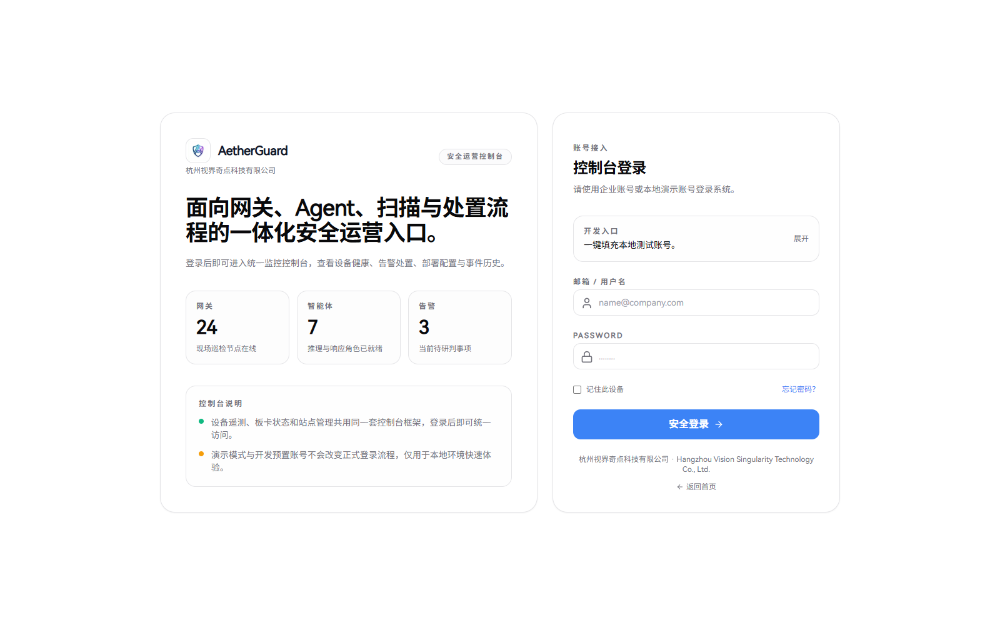
Dashboard 聚合展示平台运行状态、活跃节点、风险处置概况、站点与流量监测摘要等信息，是日常巡检和演示汇报时最先查看的页面。用户进入系统后，可先通过此页确认平台是否在线、近期是否出现异常升高的风险事件，以及关键控制项是否处于正常状态。
该页面的核心价值在于“先总览、后定位”。当某项指标异常时，用户可依据页面上展示的概况信息判断问题所属方向，再转入 Agents、Devices、Sites、Scanner 或 Alerts 页面继续排查。这样可以避免在未掌握总体态势前直接进入细节页面，提升巡检效率。
进入路径：用户登录成功后默认进入该页面，也可通过左侧导航点击 Dashboard 返回。
适用场景：每日巡检、现场演示、系统开局检查、问题初筛和运维交接确认。
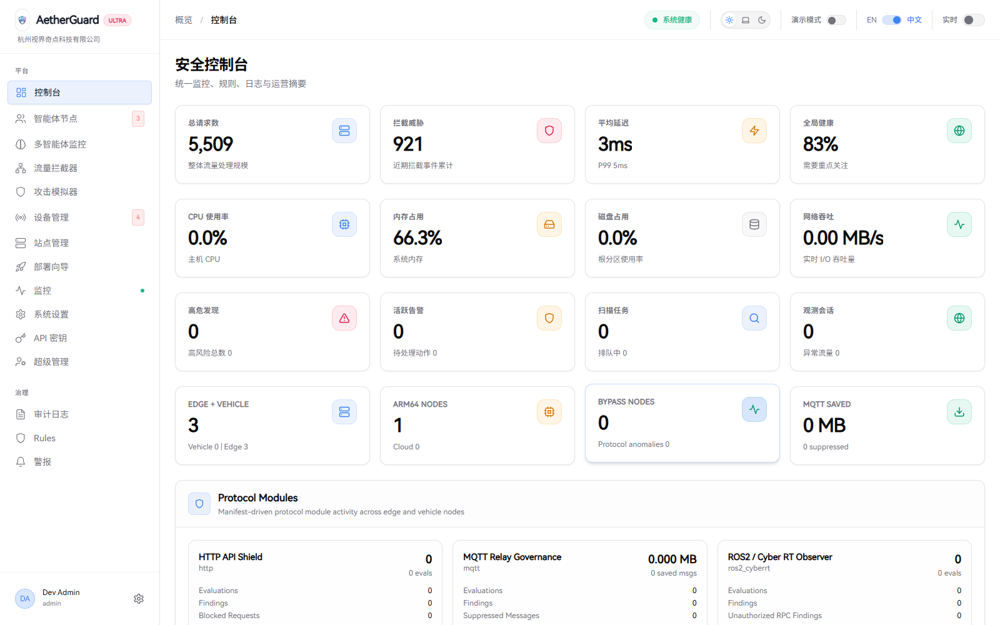
Agents 页面以节点为维度展示受控执行单元，是平台对分布式 Agent 进行统一管理的主入口。用户可在这里查看各节点的在线状态、节点名称、运行情况及跳转详情入口，从而快速确认哪些节点工作正常，哪些节点需要进一步处理。
对于节点数量较多的环境，此页承担“资产台账”作用。用户可先从列表中定位目标节点，再进入详情页查看协议策略、运行模式和最近威胁记录，因此该页面既适合日常巡检，也适合做故障排查前的初始筛查。
左侧导航用于切换模块；页面主体区域展示节点概况和列表；列表项可继续进入节点详情页面。
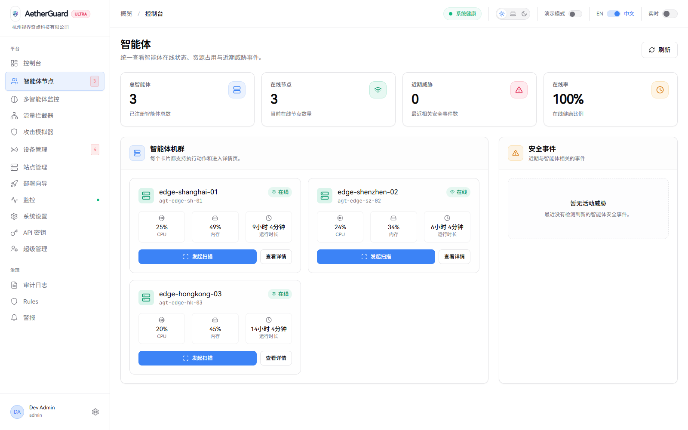
当用户从 Agents 列表进入某个节点后，可在该页面查看更细粒度的上下文信息，包括节点类型、系统架构、运行模式、协议节省量、最近心跳、资源占用和关联设备等。这些信息有助于用户从单节点视角判断平台执行层是否稳定。
页面还提供运行时策略和协议策略的保存入口，适用于已具备管理权限的用户调整策略阈值、开启旁路规则或修改协议控制项。对于异常节点，用户还可以从此页发起扫描，并结合近期威胁区域判断是否需要进一步处置。
进入路径：Agents 列表页点击目标节点。
适用场景：单节点异常排查、策略核对、演示节点能力、检查关联设备和风险记录。
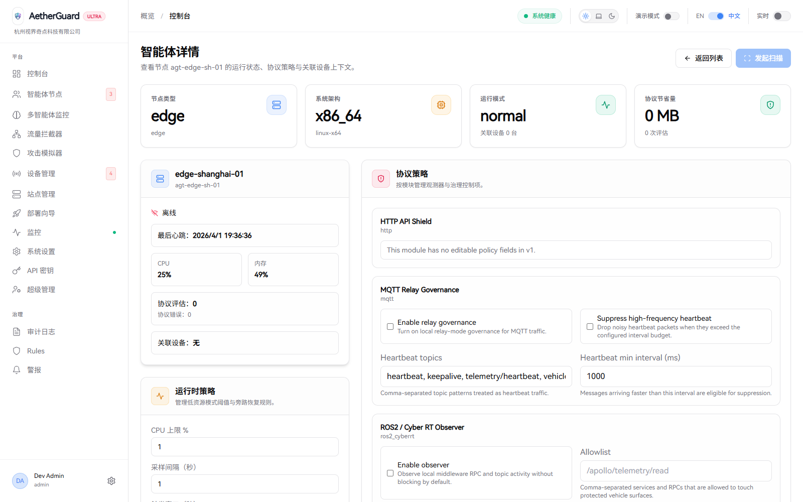
与节点详情页相比，智能体监控页更加偏向全局运行态势观察。它适合用来查看节点集群的健康分布、负载情况、队列压力和整体处理能力，有助于用户识别某一时段是否存在资源拥塞、任务堆积或节点性能不均衡的问题。
当平台接入的执行节点数量增加后，仅靠单节点列表已难以判断集群整体是否稳定。此时，智能体监控页就成为巡检人员判断“当前执行层是否可持续支撑平台负载”的关键页面，适合在日常巡检和扩容评估时优先查看。
1. 观察节点健康与工作状态。
2. 对比不同节点之间的负载与延迟差异。
3. 为扩容、调度和异常定位提供依据。
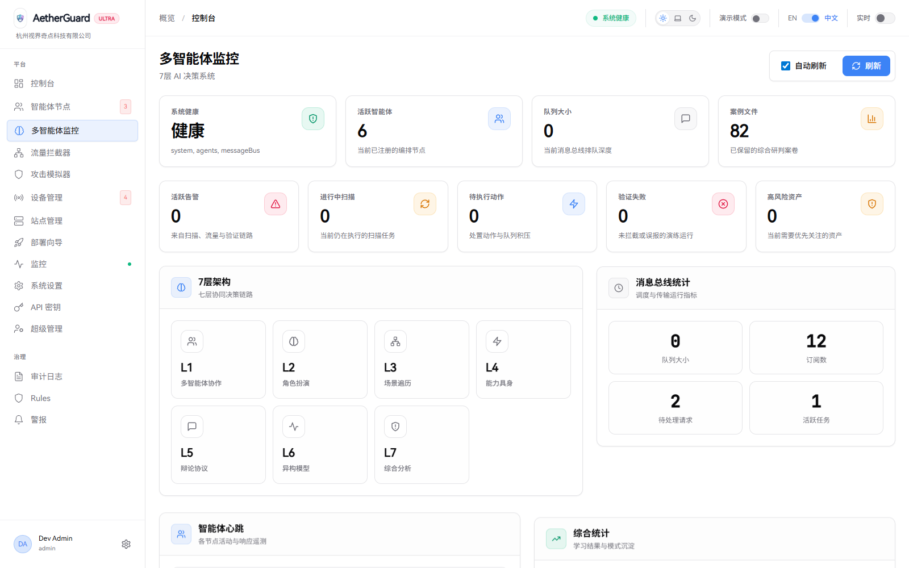
该页面以流量和会话为中心展示平台当前观测到的网络访问情况，是研判恶意请求、识别高频异常和回溯拦截动作的重要入口。相比 Dashboard 的概览信息，此页更强调会话上下文和处置结果，适合在发现异常后进一步确认流量级行为。
平台将流量观察结果、命中策略和会话变化集中展示在同一页面，便于用户快速识别是否存在异常扫描、恶意访问、突发高频请求或来源异常的会话。结合 Agent 监控和告警中心，可构成从运行侧到网络侧的联合排查流程。
异常流量排查、会话分析、拦截效果核对、平台演示和规则验证。
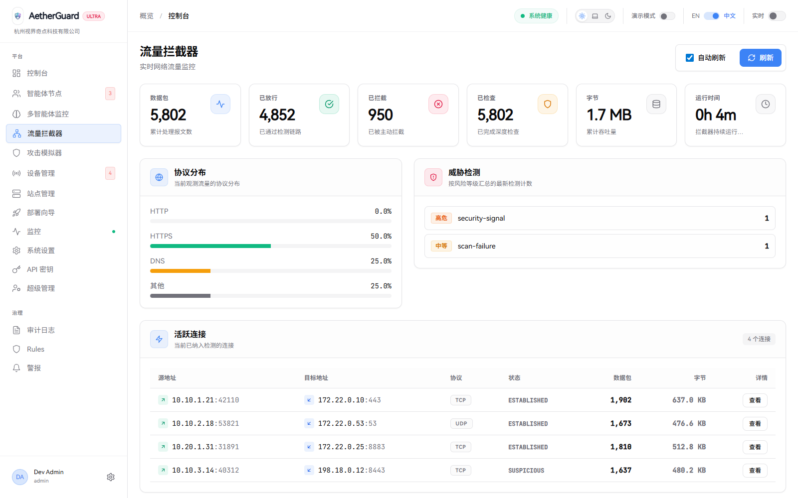
攻击模拟页并非面向硬件或底层执行脚本的配置界面，而是面向控制台用户的任务观察与验证页面。用户可以通过该页确认模拟任务是否已启动、处于哪个执行阶段，以及平台是否按预期记录和处置模拟事件。
在策略上线验证、功能演示、培训讲解和回归测试场景中，攻击模拟页具有较高价值。它帮助使用者在不直接操作底层环境的情况下，从控制台视角验证规则、拦截和记录是否形成闭环，提高平台演示和内部验证效率。
页面通常包含任务状态摘要、执行进度、历史记录和结果区域，便于观察任务全过程。
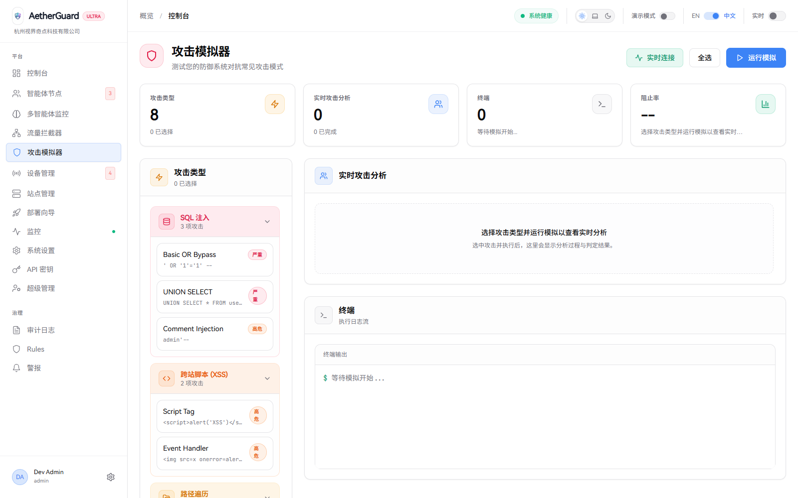
设备管理页保留的是软件侧设备接入与观察能力，用于展示控制台已识别的设备信息、状态摘要和跳转入口。用户可以从该页判断当前接入设备是否稳定在线、设备数量是否正常，以及是否存在需要进一步检查的设备条目。
该页面在软件著作权材料中体现的是设备管理能力，而不是硬件制造能力。也就是说，用户手册仅说明如何通过软件界面查看设备对象、进入板卡状态页并观察数据，不涉及任何板卡生产、PCB 设计、固件烧录或物理交付流程。
通过左侧导航进入“设备管理”。页面会展示设备概况和设备列表。
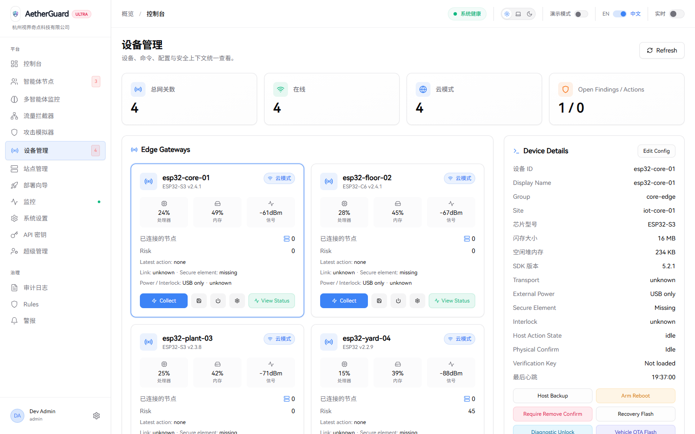
用户从设备管理页进入单个设备后，可查看该设备的详细状态，包括设备 ID、芯片或版本信息、内存状态、最后心跳时间以及事件流。这些信息适合用于判断单个设备是否稳定运行，以及设备近期是否存在告警、异常事件或连接变化。
对于演示和排查场景，板卡状态页的价值在于提供单设备级别的观察窗口。它能帮助用户将问题从“设备组层面”进一步缩小到“单设备对象层面”，便于与上游 Agent、站点或流量问题进行关联核对。
顶部展示设备身份与当前状态，中部展示资源指标和基础信息，下部展示事件流和时间序列信息。
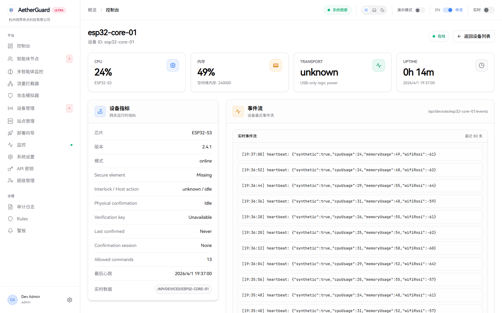
与 Agents 和 Devices 偏向基础设施对象不同，站点列表页面向业务资产管理，重点在于呈现被纳入平台保护范围的站点对象。用户可以通过此页查看站点名称、状态和跳转入口，从业务侧视角理解平台当前保护和监测的资产范围。
当用户需要对某一业务域名、应用入口或站点对象进行分析时，通常会先进入站点列表，再进一步进入站点详情页查看风险、流量和相关信息。因此，站点列表页是资产治理和业务安全运营的重要入口。
业务资产纳管确认、站点巡检、站点扩容前盘点、风险对象定位。
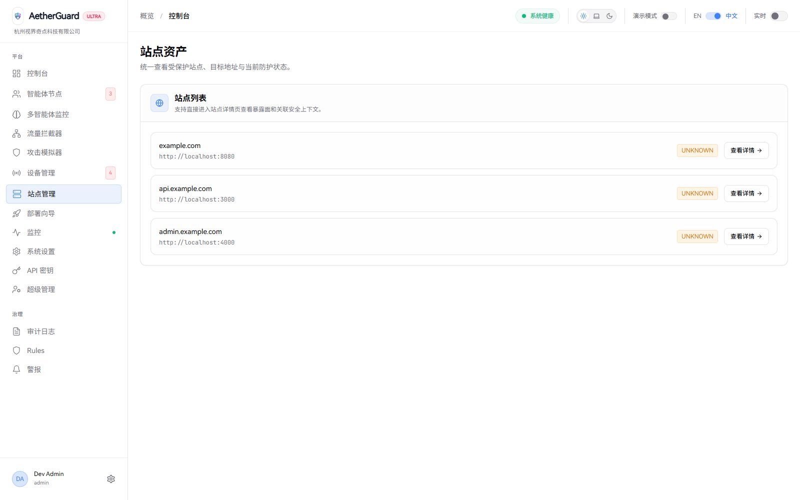
当用户进入某一站点详情页后，可围绕该站点查看安全状态、相关告警、访问态势或其他关联信息。该页面适合从“业务对象”而非“节点对象”的角度对问题进行理解，是面向业务资产责任人的重点页面。
在实际使用过程中，站点详情页可以帮助用户判断问题是否集中在某一个业务域名、某一类访问流量或某一批告警事件上。对于需要向业务侧说明影响范围的场景，此页比基础设施页面更容易形成可理解的沟通口径。
进入路径：站点列表页点击目标站点对象。
适用场景：单站点风险分析、站点状态汇报、面向业务的安全说明。
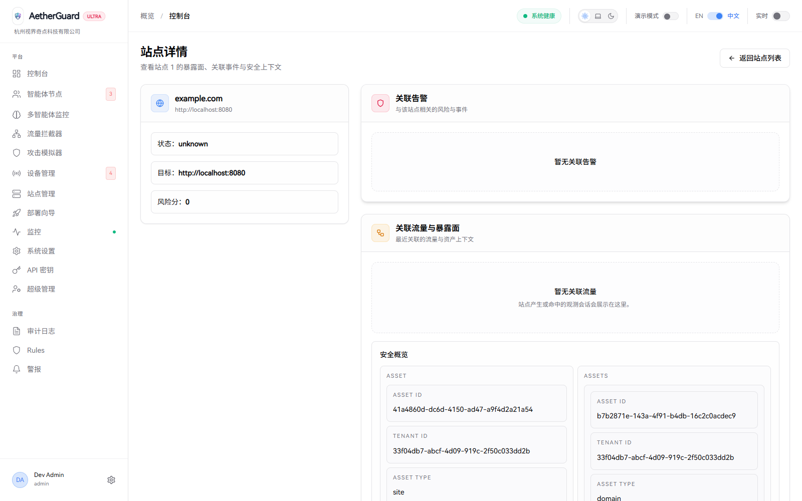
部署向导是平台的重要落地入口，适合在新环境接入、现有环境扩容或演示配置生成时使用。页面按步骤组织操作，帮助用户明确目标网关、接入参数和部署信息，降低手工配置错误率。
通过向导方式生成配置后，用户能够以统一、规范的方式完成接入工作。对于管理多个环境的用户而言，该页还提供历史配置查看能力，便于对比版本、回顾先前生成结果并提高重复部署的效率。
左侧为部署步骤与参数配置区，右侧为历史配置包或已保存版本列表。
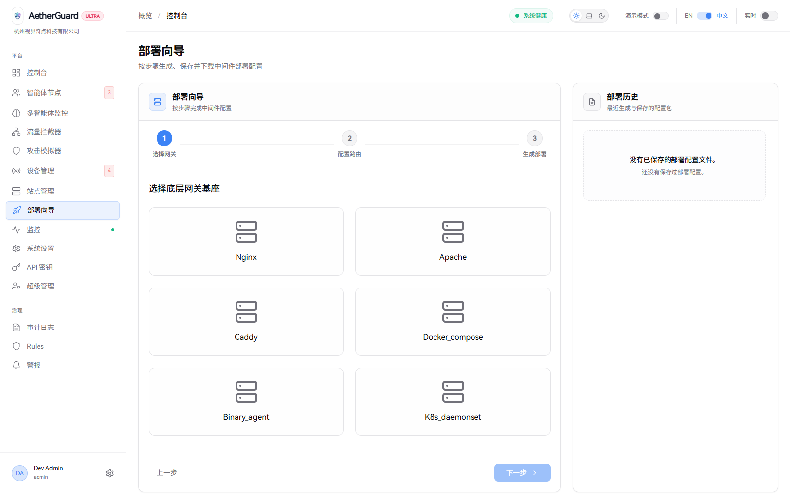
扫描中心是平台主动发现风险的重要页面，用户可在此统一配置 URL 目标、选择扫描范围、发起任务并跟踪执行进度。与仅查看告警不同，扫描中心强调主动探测与结构化结果输出，适合用于周期性风险检查和专项排查。
页面将当前任务、历史任务、资产视图、发现列表、证据与动作、任务时间线整合在一起，使用户可以在单一界面完成“发起扫描、查看结果、确认证据、创建动作”的连续操作。这种结构对提升处置效率和避免信息跳转很有帮助。
资产风险扫描、版本上线前检查、专项排查、生成处置动作、回顾历史扫描过程。
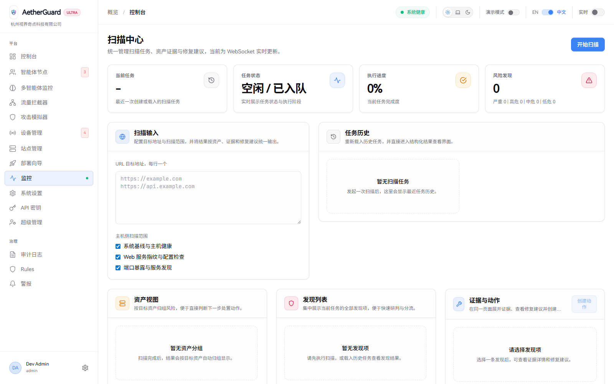
当平台检测到异常流量、节点问题、扫描风险或策略触发事件时，会将相关记录汇总到告警中心。用户在日常使用中可将该页面视为“问题入口页”，优先从这里判断当前异常事件的数量、严重程度和分布情况。
告警中心的核心价值在于帮助用户做优先级排序。通过集中查看告警项，用户可以先锁定高优先级对象，再分别转入站点、节点、流量或历史页面进行深入分析，形成更高效的处置流程。
1. 汇总异常事件。
2. 支持研判和排序。
3. 为后续跳转分析提供入口。
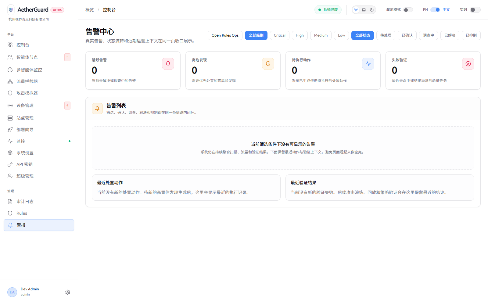
修复历史页保存的是平台处理过程中的留痕信息，包括历史任务、执行阶段和归档结果。对于需要做问题复盘、内部审计、管理汇报或操作过程追踪的场景，该页面具有较强的支撑作用。
通过修复历史，用户能够回答“此前处理过什么问题”“处理过程如何推进”“最终结果是什么”等关键问题。它不仅是技术层面的记录页，也是管理层面进行留痕、检查和复盘的重要依据。
问题复盘、内部审计、项目总结、过程回看、对外说明处理经过。
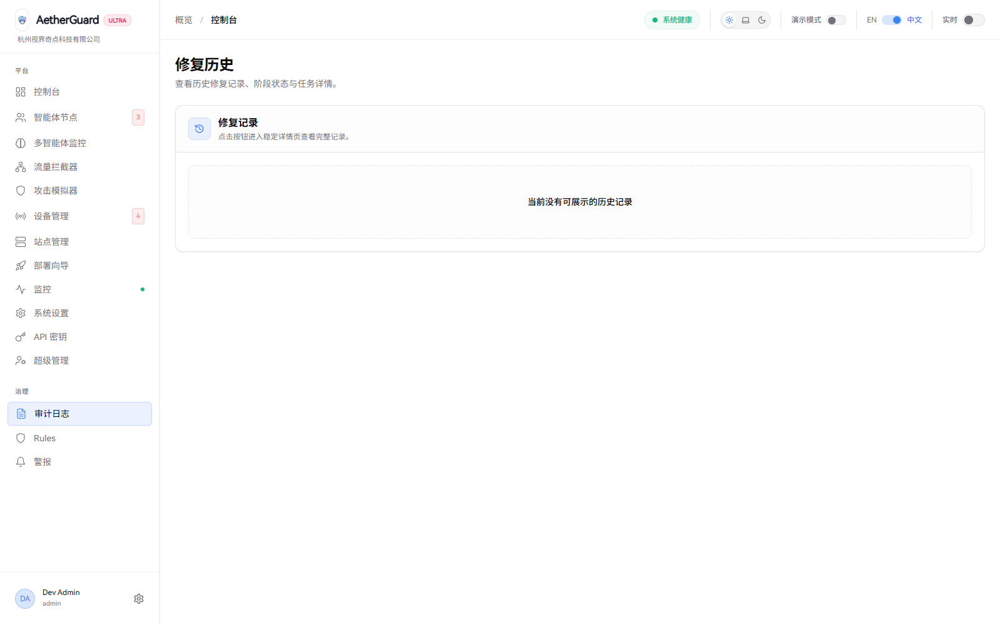
系统设置是平台的系统级管理入口。具备权限的用户可以通过该页面查看或调整平台能力项、模型接入信息以及其他配置内容，从而保证控制台功能与后端运行能力保持一致。对普通巡检用户而言，该页主要用于了解当前系统配置情况；对管理员而言，则承担集中维护职责。
由于系统设置会影响整个平台的行为，建议统一由具备管理权限的人员维护，并在变更前后做好记录。这样既能减少多人同时修改造成的配置差异，也有利于在问题出现时快速回溯变更来源。
进入路径：左侧导航点击“系统设置”。作用包括查看能力开关、AI 端点、系统说明和配置状态。
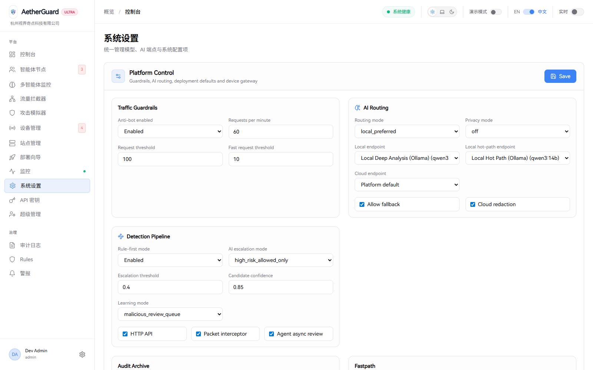
日常巡检建议从 Dashboard 开始，先确认系统整体健康状态，再根据异常方向进入 Agents、Devices、Sites、Traffic、Scanner 或 Alerts 页面进行对象级分析。完成处理后，应当回到 History 页面查看归档情况，确保事件形成完整闭环。
若任务目标是新增环境接入，建议先通过 Deployment Wizard 生成部署配置，再根据接入后的对象类别进入设备管理、站点列表或智能体列表核对接入结果。若任务目标是专项排查，则建议从告警中心或扫描中心出发，结合流量拦截和站点详情完成问题分析。
系统设置应由授权人员集中维护，历史记录应定期检查，重要演示和巡检材料应留存原始整窗截图。这样既便于后续复盘，也有利于对外说明平台运行状态、接入对象和处理过程。
1. 保持截图、页面标题和软件名称一致。
2. 关键配置项应由授权人员统一维护。
3. 历史记录和修复归档应定期核对。
4. 设备管理仅描述软件接入能力，不延伸至硬件制造内容。